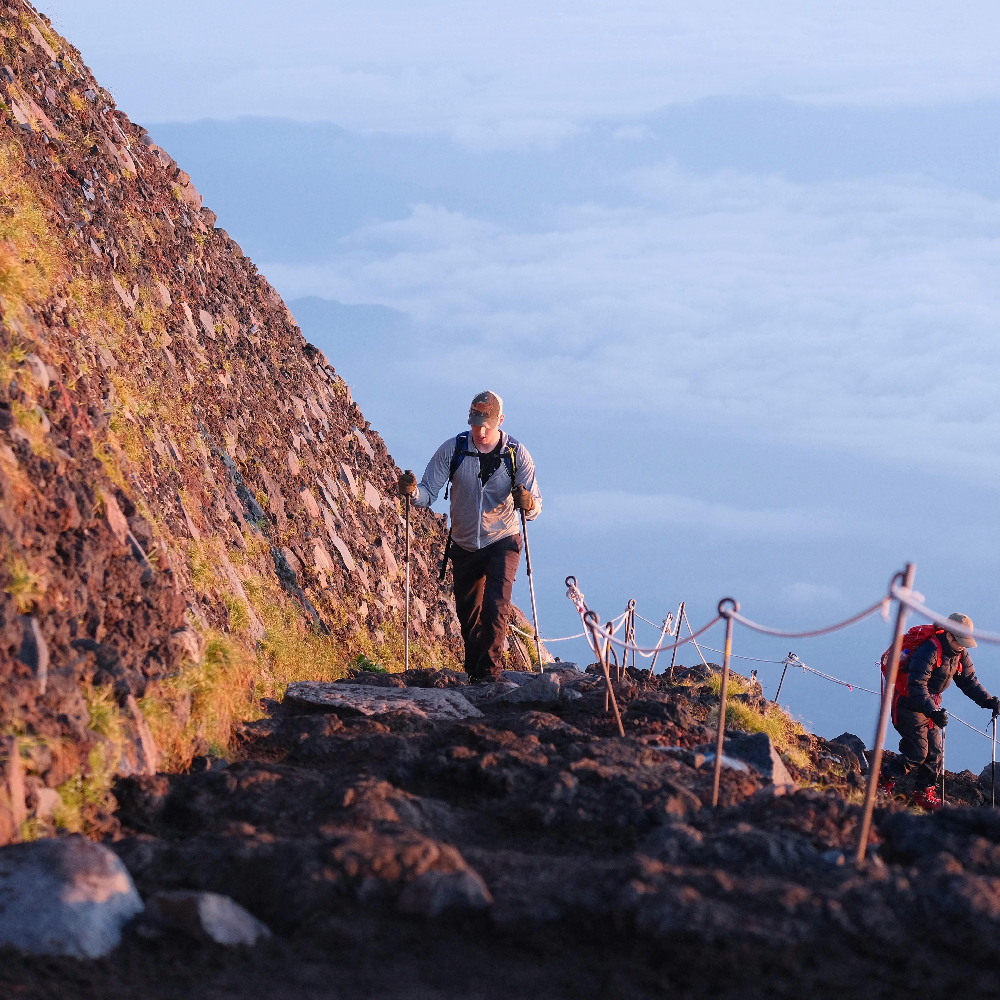
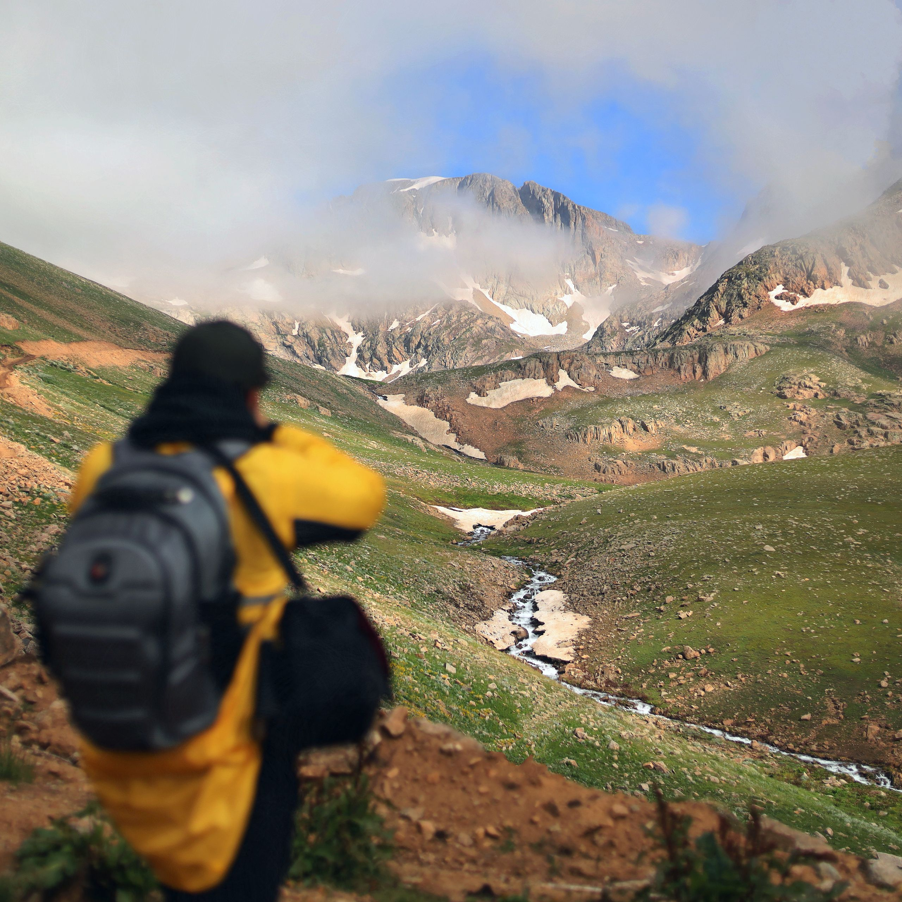
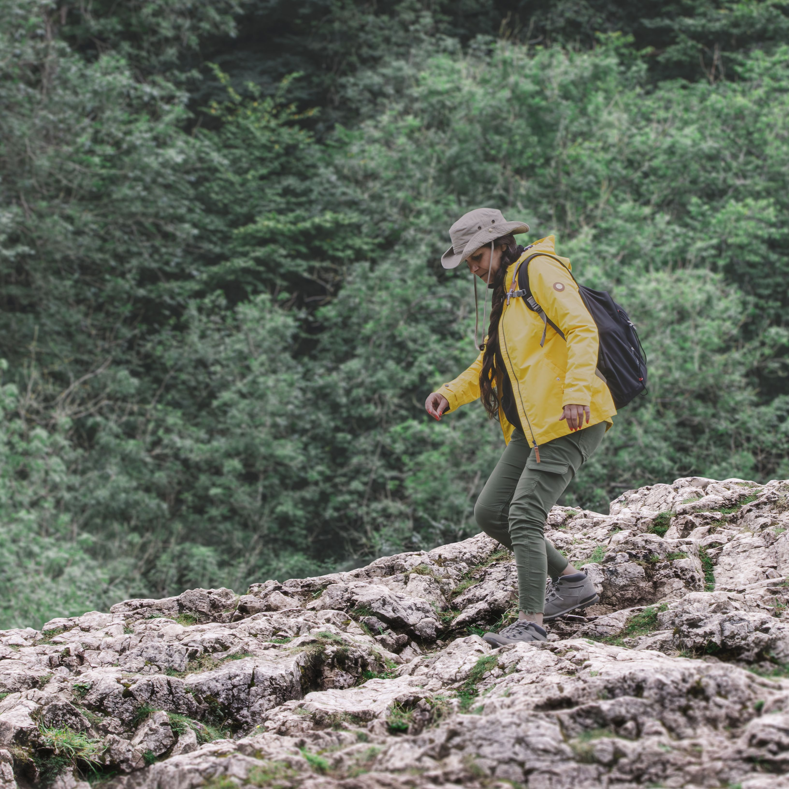
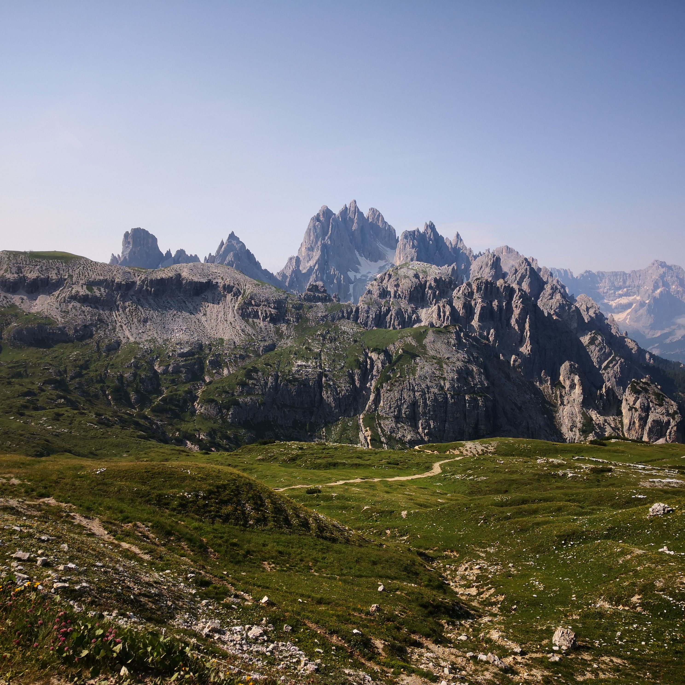

Fácil
Quebrada del Condorito
Reserva Nacional con avistamiento de cóndores. Ideal para familias y principiantes.
1 díaDuración
2.100 mAltitud

La cumbre más alta de la provincia de Córdoba a 2.884 metros. Dos días de travesía entre bosques nativos, ríos de montaña y vistas que no olvidarás.
El Cerro Champaquí (2.884 m s.n.m.) es el punto más alto de las Sierras Grandes y de toda la provincia de Córdoba. Su nombre proviene del quechua y significa "lugar de arbustos altos". Ascender hasta su cumbre es uno de los trekking más desafiantes y gratificantes que ofrece la naturaleza cordobesa.
La travesía de dos días nos lleva a través de ecosistemas únicos: bosques de tabaquillo y maitén, pastizales de altura, mallines y cumbres rocosas. A lo largo del camino cruzamos arroyos cristalinos, avistamos cóndores en vuelo y, si el clima acompaña, desde la cumbre podemos ver hasta las salinas de San Luis y los Andes en el horizonte.
La salida es ideal para personas con buena condición física y experiencia previa en trekking de al menos un día. No es necesaria experiencia en alta montaña, pero sí se recomienda haber realizado caminatas de más de 15 km. Nuestros guías adaptan el ritmo del grupo y brindan todo el soporte necesario.
Día 1
Partida desde el punto de reunión en la ciudad de Córdoba a las 6:00 am. Traslado hasta la localidad de Villa Alpina (punto de inicio del sendero). Inicio del trekking en ascenso por el sendero principal, cruzando el río Los Molinos y atravesando bosque nativo de altura. Almuerzo en el campo. Llegada al campamento base (1.800 m) a media tarde. Armado de carpas, cena caliente y descanso bajo un cielo sin contaminación lumínica.
Día 2
Salida temprana (6:00 am) para el tramo final de ascenso a la cumbre. El sendero se vuelve más técnico en los últimos 300 metros verticales, cruzando pastizales de altura y afloramientos rocosos. Llegada a la cumbre (2.884 m) hacia el mediodía. Celebración, fotos y almuerzo con vistas 360°. Descenso por el mismo sendero, con llegada al punto de inicio al atardecer. Regreso a Córdoba.


Los cupos son limitados para garantizar la mejor experiencia. Reservá tu lugar hoy.
Reserva Nacional con avistamiento de cóndores. Ideal para familias y principiantes.
El cerro más emblemático de Córdoba. Historia, energía y vistas panorámicas.

Extremo4 días en los Andes mendocinos. Glaciares y paso de montaña para aventureros.